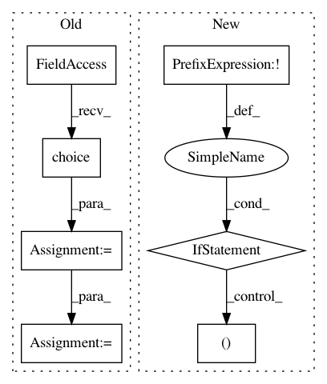

5fe98231a26e08d81f9684a681af43bc2fb2b847,pyinterpret/model/model.py,Model,check_output_signature,#Model#Any#,38
Before Change
def check_output_signature(self, examples):
Determines the model_type, output_type
ids = range(len(examples))
idx = np.random.choice(ids, size=5, replace=True)
inputs = examples[idx]
outputs = self(inputs)
self.output_shape = outputs.shape
if len(self.output_shape) == 1:
//print "shape is 1"
After Change
about the types of outputs the function generally makes.
if not examples.any():
err_msg = "Examples have not been provided. Cannot check outputs"
raise exceptions.ModelError(err_msg)
outputs = self(examples)
self.input_shape = examples.shape
self.output_shape = outputs.shape
if len(self.output_shape) == 1:
// the predict function is either a continuous prediction,
// or a most-likely classification
example_output = outputs[0]
self.output_var_type = return_data_type(example_output)
if self.output_var_type in (StaticTypes.output_types.string,
StaticTypes.output_types.int):
// the prediction is yield groups as strings or ints,
// as in a classification model
self.model_type = StaticTypes.model_types.classifier
In pattern: SUPERPATTERN
Frequency: 3
Non-data size: 7
Instances
Project Name: datascienceinc/Skater
Commit Name: 5fe98231a26e08d81f9684a681af43bc2fb2b847
Time: 2017-03-16
Author: aikramer2@gmail.com
File Name: pyinterpret/model/model.py
Class Name: Model
Method Name: check_output_signature
Project Name: SpiNNakerManchester/sPyNNaker
Commit Name: 148f63289a3fb4b809d6b5d63feaddf3e64bed26
Time: 2018-03-01
Author: andrew.gait@manchester.ac.uk
File Name: spynnaker/pyNN/models/neural_projections/connectors/multapse_connector.py
Class Name: MultapseConnector
Method Name: create_synaptic_block
Project Name: EpistasisLab/tpot
Commit Name: f0d0cc86130312a261453962d829d36bbf8925ee
Time: 2017-06-24
Author: p.gijsbers@student.tue.nl
File Name: tpot/gp_deap.py
Class Name:
Method Name: pick_two_individuals_eligible_for_crossover